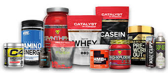

<!DOCTYPE html>
<meta http-equiv="content-type" content="text/html;charset=UTF-8" />
<head>
    <title>Impins la piet cu bara | HealthyZ</title>
    <meta property="og:site_name" content="Strength Coach Glasgow" />
    <meta http-equiv='cache-control' content='no-cache' />
    <meta http-equiv="Content-Type" content="text/html; charset=utf-8" />
    <meta name="viewport" content="width=device-width, initial-scale=1.0" />
    <link id="wsite-base-style" rel="stylesheet" type="text/css" href="../../cdn2.editmysite.com/css/sites9be7.css?buildTime=1561486651" />
    <link rel="stylesheet" type="text/css" href="../files/main_stylef74e.css?1561485939" title="wsite-theme-css" />
    <link href='http://fonts.googleapis.com/css?family=Montserrat:400,700&amp;subset=latin,latin-ext' rel='stylesheet' type='text/css' />
</head>
<body class="header-page  wsite-page-blog wsite-blog-post  full-width-body-off header-overlay-on alt-nav-on  wsite-theme-light">
    <div class="wrapper">

        <div class="banner-wrap">
            <div class="wsite-elements wsite-not-footer wsite-header-elements">
                <div class="wsite-section-wrap">
                    <div class="wsite-section wsite-header-section wsite-section-bg-image wsite-section-effect-parallax" style="height: auto;background-image: url(_/uploads/1/2/3/3/123320581/background-images/1565318044.html);background-repeat: no-repeat ;background-position: 50% 50% ;background-size: 100% ;background-color: transparent ;background-size: cover;background-attachment: fixed;">
                        <div class="wsite-section-content">
                            <div class="container">
                                <div class="banner">
                                    <div class="wsite-section-elements">
                                        <div class="wsite-spacer" style="height:50px;"></div>

                                        <h2 class="wsite-content-title">Antrenamente | Nutritie</h2>

                                        <div class="wsite-spacer" style="height:50px;"></div>
                                    </div>
                                </div>
                            </div>

                        </div>
                        <div class=""></div>
                    </div>
                </div>

            </div>

        </div>

        <div class="main-wrap">
            <div class="wsite-section-content">
                <div class="container">
                    <div class="wsite-elements wsite-not-footer">
                        <table id="blogTable" class="wsite-not-footer" style="border: 0; width: 100%; table-layout: fixed">
                            <tr>
                                <td valign="top">
                                    <div id="815468006538632597-blog" class="blog-body" style="float: left;">
                                        <div id="wsite-content">
                                            <div id="blog-post-205195184828542372" class="blog-post">

                                                <div class="blog-header">
                                                    <h2 class="blog-title">
					<a class="blog-title-link blog-lin">Suplimente pentru fiecare</a>

			</h2>
                                                    <p class="blog-date">
                                                        <span class="date-text">
		2/25/2019
	</span>

                                                    </p>
                                                    <p class="blog-comments">

                                                    </p>
                                                </div>

                                                <div class="blog-separator">&nbsp;</div>

                                                <div class="blog-content">
                                                    <div>
                                                        <div class="wsite-image wsite-image-border-none " style="padding-top:10px;padding-bottom:10px;margin-left:0px;margin-right:0px;text-align:center">
                                                            <a>  </a>
                                                            <div style="display:block;font-size:90%"></div>
                                                        </div>
                                                    </div>
                                                    <div class="paragraph">Este adevărat că suplimentele nutritive nu sunt absolut necesare ca să obţii masă musculară. La fel de adevărat este că suplimentele te vor ajuta să creşti în forţă şi masă musculară mult mai repede şi să obţii performanţe sportive mult mai bune.<br><br>

Cu atâtea tipuri de produse, este tot mai greu să îţi dai seama ce să iei mai întâi. Sunt sute de sortimente, fiecare cu rolul lui. Iată mai jos care sunt principalele suplimente folosite în culturism:<br><br>

Aminoacizi şi aminoacizii cu lanţ ramificat (BCAA)<br>
Aminoacizii – „cărămizile” care compun proteinele – sunt de două feluri:<br><br>

aminoacizi esenţiali care nu pot fi sintetizaţi de organismul uman (histidina, izoleucina, leucina, valina, lizina, metionina, fenilanina, treonina, şi triptofanul) şi care trebuie să fie prezenţi neapărat în alimentaţie.<br><br>

aminoacizi neesenţiali (alanina, arginina, asparagina, acidul aspartic, cisteina, acidul glutamic, glutamina, glicina, prolina, serina, tirozina,) pe care organismul îi poate produce singur.<br><br>

Dintre aminoacizii esenţiali, 3 au o importanţă foarte mare pentru sportivi. Este vorba de leucină, izoleucină şi valină, adică aminoacizii cu lanţ ramificat (branched-chain amino acids sau BCAA), care sunt metabolizaţi în muşchii scheletici şi nu în ficat, cum se întâmplă cu ceilalţi aminoacizi. Astfel, după ce proteinele au fost digerate, aminoacizii cu lanţ ramificat pot fi folosiţi pentru construirea altor proteine, ca sursă de energie sau ca precursori pentru formarea altor aminoacizi.<br><br>

Creatină<br>
Creatina este prezentă natural în organism, cu precădere în muşchii scheletici. Surse de creatină sunt carnea de pui, vacă sau peşte. Creatina este distrusă, însă, prin gătire, deci suplimentele rămân cea mai bună sursă.<br><br>

Creatina este foarte eficientă pentru creşterea masei musculare fiindcă măreşte producţia de ATP (Adenozin trifosfat – sursa principală de energie a muşchilor pentru puterea explozivă) astfel încât poţi efectua mai multe repetări şi seturi cu o greutăţi mai mari, ceea ce te va ajuta să obţii muşchi mai mari şi mai puternici.<br><br>

Creatina trebuie ciclicizată. Mulţi sportivi au înregistrat rezultate foarte bune când au luat creatină timp de 4 săptămâni, urmate de două săptămâni de pauză. Sunt multe sortimente de creatină cum ar fi: creatina monohidrat pură, creatina lichidă, creatină micronizată şi multe altele.<br><br>

Dintre suplimentele nutritive pe bază de creatină, cele mai bune sunt acelea care conţin dextroză, aminoacizi şi alte ingrediente. Totuşi, o variantă mai ieftină cum ar fi creatina micronizată luată cu suc de fructe nu este o alegere proastă. Oricare ar fi suplimentul ales, creatina trebuie luată după antrenamentul de forţă.<br><br>
                                                    Glutamină<br>
L-glutamina este cel mai abundent aminoacid prezent în ţesutul muscular. Previne distrugerea celulelor musculare şi îmbunătăţeşte recuperarea. Glutamina poate fi administrată în tot cursul anului.<br><br>

Glutamina nu trebuie luată în acelaşi timp cu creatina, fiindcă intră în competiţei una cu cealaltă pentru receptori ca să fie absorbite. De aceea, ia glutamină înaintea antrenamentului şi creatina după antrenament.<br><br>

HMB (beta-hidroxi-beta-metilbutirat)<br>
Este un metabolit al leucinei – unul dintre aminoacizii esenţiali ai organismului şi joacă un rol important în sinteza ţesutului muscular. HMB este un supliment nutritiv foarte eficient pentru arderea grăsimii şi ajută la creşterea forţei şi a masei musculare, în urma exerciţiilor de forţă.<br><br>
                                                    
                                                    Multivitamine<br>
Nu le neglija. Dacă organismul tău duce lipsă de un singur mineral sau vitamină, progresele tale pot fi serios afectate. De aceea, un supliment cu multivitamine este absolut obligatoriu pentru acumularea de masă musculară şi o bună sănătate la modul general.<br><br>

Cei care merg la sală au nevoie de cantităţi mai mari de vitamnie şi minerale decât persoanele sedentare, de aceea nu vei găsi în supermarketuri suplimente nutitive de calitate cu multivitamine.<br><br>

Pudre proteice<br>
Shake-urile din pudre proteice sunt soluţii foarte comode ca să îţi asiguri proteine de bună calitate. Proteinele sunt formate din aminoacizi, numiţi şi „cărămizile” de bază din care sunt alcătuiţi muşchii. Aşadar, proteinele sunt de cea mai mare importanţă pentru creşterea masei musculare. Un culturist ar trebui să îşi asigure 1,5-2 g de proteine pe kg corp slab (greutate ideală). Deci, un sportiv cu greutatea ideală de 100 de kg ar trebui să consume 150-200 g de proteine. Problema majoră apare când vrem cât o cantitate mare de proteine, dar cât mai puţine calorii din grăsimi şi carbohidraţi; aici intervin suplimentele nutritive care au o compoziţie croită pe nevoile fiecărui sportiv.<br><br>

Principalele surse ale pudrelor proteice sunt: zerul, soia, ouăle şi caseina, fiecare cu particularităţile ei specifice.<br><br>

Zerul – proteina din zer este suplimentul post-antrenament ideal, fiindcă acum este momentul când organismul are cea mai mare nevoie de proteine, iar zerul se digeră foarte rapid (aproximativ 30 de minute). Pudrele proteice din zer se prezintă sub 3 forme principale:<br><br>

Izolat proteic din zer (WPI) – are un conţinut mare de proteine (90%), este sărac în grăsimi şi carbohidraţi.<br>
Concentrat proteic din zer (WPC) – coţine mai puţine proteine (29%–89%) şi respectiv multe grăsimi şi carbohidraţi, faţă de izolatul proteic din zer.<br>
Proteină din zer hidrolizată – sunt proteine „predigerate” şi de aceea au cea mai rapidă viteză de absorbţie. Mai mult de jumătate din proteinele hidrolizate consumate trec rapid prin stomac şi sunt absorbite direct în intestinul subţire<br>
Caseina – se digeră lent (2-7 ore). Este un supliment foarte bun luat seara înainte de culcare. Noaptea, când dormi, organismul nu primeşte substanţe nutritive, iar caseina este o sursă constantă de proteine în această perioadă, datorită absorbţiei lente.<br><br>

Ouă – proteinele din ouă (albumină) au o viteză medie de absorbţie (1,5-3 ore), deci pot fi o sursă de aminoacizi foarte bună, în orice moment al zilei.<br><br>

Soia – proteina din soia este soluţia ideală pentru vegetarieni, fiindcă este una dintre puţinele proteine complete de origine vegetală. Soia este o sursă bună de proteine, deşi se absoarbe mai greu decât proteinele din zer sau ouă. Un plus ar fi anumite beneficii pentru sănătatea femeilor.<br><br>

Amestecuri – pudrele proteice sunt obţinute fie doar din zer, ouă, caseină sau soia, fie sunt amestecuri ale acestora. Avantajul unor astfel de pudre este timpul de absorbţie care poate fi rapid, mediu sau lung.<br><br>

Hipoglucidice – sau sărace în carbohidraţi. Cele două mari categorii de suplimente proteice sunt cele pentru masă (weight gainer) sau cele hipoglucidice. Acestea din urmă sunt recomandate celor care vor să slăbească.<br><br>

Masă musculară – acestea sunt suplimente proteice foarte bogate în calorii de calitate, destinate celor care vor să ia în greutate.<br><br>
                                                    Carbohidratii sunt numiti in biochimie si zaharide. Zaharidele sunt apoi impartite in patru grupuri chimice: monozaharide, dizaharide, oligozaharide si polizaharide. In general, monozaharidele  si zaharidele sunt clasificate ca zaharuri. Zaharurile sunt numite si carbohidrati simplii. Oligozaharidele si polizaharidele sunt numite carbohidrati complecsi. Termenii de carbohidrati simplii si carbohidrati complecsi sunt cei mai de sutilizati in limbajul curent.<br><br>

Rata de digestie a carbohidratilor difera in functie de sursa. Scara cu care se masoara rata de digestie a carbohidratilor se numeste index glicemic. Cu cat are o valoare mai mare pe indexul glicemic, cu atat un carbohidrat este digerat mai rapid. Si invers, cu cat mai mica valoarea, cu atat se digera mai greu.<br><br></div>
                                                    <div class="paragraph"><u><em>Exercitiu recomandat pentru:<br /></em></u>Incepatori: &#10004;&#65039;
                                                        <br />Avansati: &#10004;&#65039;
                                                        <br />&nbsp;
                                                        <br /><u><em>Sfaturi!<br /></em></u>
                                                        <ul>
                                                            <li>In primul rand trebuie sa realizezi o incalzire generala de 10-15 min, iar mai apoi sa reazlizezi o incalzire specifica, pentru fiecare grupa folosita, intre 10-15 min.</li>
                                                            <li>Incepe cu greutati mici la inceput, ca mai apoi sa cresti treptat greutatea.</li>
                                                            <li>Mereu fii concentrat si focusat pe ceea ce ai de facut la sala, lasand la intrare toate probleme si frustrarile, deoarece acestea iti vor diminua antrenamentul</li>
                                                            <li>Mereu cand nu esti sigur de un anumit exercitiu, intreaba un membru din cardul salii, sunt sigur ca te va ajuta.</li>
                                                            <li>Nu te lasa intimidat de ceilalti.</li>
                                                        </ul>
                                                    </div>
                                                    <div class="wsite-youtube" style="margin-bottom:10px;margin-top:10px;">
                                                        <div class="wsite-youtube-wrapper wsite-youtube-size-auto wsite-youtube-align-center">
                                                            <div class="wsite-youtube-container">
                                                                <iframe width="560" height="315" src="https://www.youtube.com/embed/IR5jW9iNNiw" frameborder="0" allow="accelerometer; autoplay; encrypted-media; gyroscope; picture-in-picture" allowfullscreen></iframe><br>
                                                                <br>
                                                                <iframe width="560" height="315" src="https://www.youtube.com/embed/NhK0kyJj00s" frameborder="0" allow="accelerometer; autoplay; encrypted-media; gyroscope; picture-in-picture" allowfullscreen></iframe>
                                                                <br>
                                                                <br>
                                                            </div>
                                                        </div>
                                                    </div>
                                                    <div class="paragraph">Mai sus am atasat cateva video-uri explicative.
                                                        <br>
                                                    </div>
                                                    <h2 class="wsite-content-title" style="text-align:center;">Doresti mai multe informatii sau ajutor?</h2>
                                                    <div>
                                                        <div class="wsite-multicol">
                                                            <div class="wsite-multicol-table-wrap" style="margin:0 -15px;">
                                                                <table class="wsite-multicol-table">
                                                                    <tbody class="wsite-multicol-tbody">
                                                                        <tr class="wsite-multicol-tr">
                                                                            <td class="wsite-multicol-col" style="width:42.134831460674%; padding:0 15px;">
                                                                                <div>
                                                                                    <div class="wsite-image wsite-image-border-none " style="padding-top:10px;padding-bottom:10px;margin-left:0px;margin-right:0px;text-align:center"> 
                                                                                        <div style="display:block;font-size:90%"></div>
                                                                                    </div>
                                                                                </div>
                                                                            </td>
                                                                            <td class="wsite-multicol-col" style="width:57.865168539326%; padding:0 15px;">
                                                                                <div class="paragraph"><strong style="color:rgb(42, 42, 42)">Cu ce te putem ajuta?</strong>
                                                                                    <ol style="color:rgb(42, 42, 42)">
                                                                                        <li>Poti beneficia de un antrenor personal</li>
                                                                                        <li>Program nutritional customizat pentru tine</li>
                                                                                        <li>Sfaturi si participari la diferite dezbateri din cadrul sportului</li>
                                                                                        <li>Poti devenii un afiliat / partener</li>
                                                                                    </ol>
                                                                                </div>
                                                                            </td>
                                                                        </tr>
                                                                    </tbody>
                                                                </table>
                                                            </div>
                                                        </div>
                                                    </div>
                                                    <div class="paragraph"><span style="color:rgb(42, 42, 42)">Daca esti client nou, poti beneficia de diferite reduceri, la programe de antrenament si nutritionale, sau aducand un nou membru, poti castiga diferite produse promotionale.</span><span style="color:rgb(42, 42, 42)">&#8203;&#8203;</span></div>
                                                    <div style="text-align:center;">
                                                        <div style="height: 10px; overflow: hidden;"></div>
                                                        <div style="height: 10px; overflow: hidden;"></div>
                                                    </div>

                                                </div>

                                                <div class="blog-comments-bottom">

                                                </div>

                                                <div class="blog-post-separator"></div>
                                            </div>

                                            <a name="comments" id="comments"></a>
                                            <div id="commentArea">
                                                <div class="blog-comment-area">

                                                    <div id="commentText">
                                                        <!-- lastComment -->
                                                        <div id="lastComment"> </div>
                                                    </div>
                                                    <br />
                                                    <div class="blog-notice-comments-closed">Comments are closed.</div>

                                                </div>

                                            </div>

                                        </div>
                                    </div>

                                </td>

                            </tr>
                        </table>

                    </div>
                </div>
            </div>
        </div>

        <div class="footer-wrap">
            <div class="footer">
                <div class='wsite-elements wsite-footer'>
                    <div>
                        <div class="wsite-multicol">
                            <div class="wsite-multicol-table-wrap" style="margin:0 -25px;">
                                <table class="wsite-multicol-table">
                                    <tbody class="wsite-multicol-tbody">
                                        <tr class="wsite-multicol-tr">
                                            <td class="wsite-multicol-col" style="width:50.21765051138%; padding:0 25px;">

                                                <div>
                                                    <div class="wsite-multicol">
                                                        <div class="wsite-multicol-table-wrap" style="margin:0 -15px;">

                                                        </div>

                                                        <div>
                                                            <div style="height: 20px; overflow: hidden; width: 100%;"></div>
                                                            <hr class="styled-hr" style="width:100%;"></hr>
                                                            <div style="height: 20px; overflow: hidden; width: 100%;"></div>
                                                        </div>

                                                        <div>
                                                            <div class="wsite-multicol">
                                                                <div class="wsite-multicol-table-wrap" style="margin:0 -15px;">
                                                                    <table class="wsite-multicol-table">
                                                                        <tbody class="wsite-multicol-tbody">
                                                                            <tr class="wsite-multicol-tr">
                                                                                <td class="wsite-multicol-col" style="width:50%; padding:0 15px;">

                                                                                    <div class="paragraph" style="text-align:left;"><font size="1">&copy; COPYRIGHT 2019. ALL RIGHTS RESERVED.</font></div>

                                                                                </td>
                                                                                <td class="wsite-multicol-col" style="width:50%; padding:0 15px;">

                                                                                    <div>
                                                                                        <div id="912742856326153445" align="right" style="width: 100%; overflow-y: hidden;" class="wcustomhtml">Website Design by <a href="#" rel="nofollow">FreakZ</a></div>
                                                                                    </div>
                                                                                </td>
                                                                            </tr>
                                                                        </tbody>
                                                                    </table>
                                                                </div>
                                                            </div>
                                                        </div>
                                                    </div>
                                                </div>
                            </div>
                        </div>
</body>

</html>